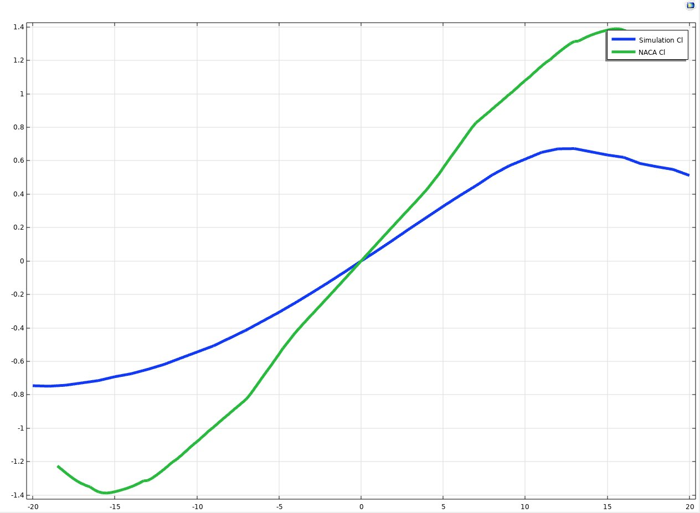
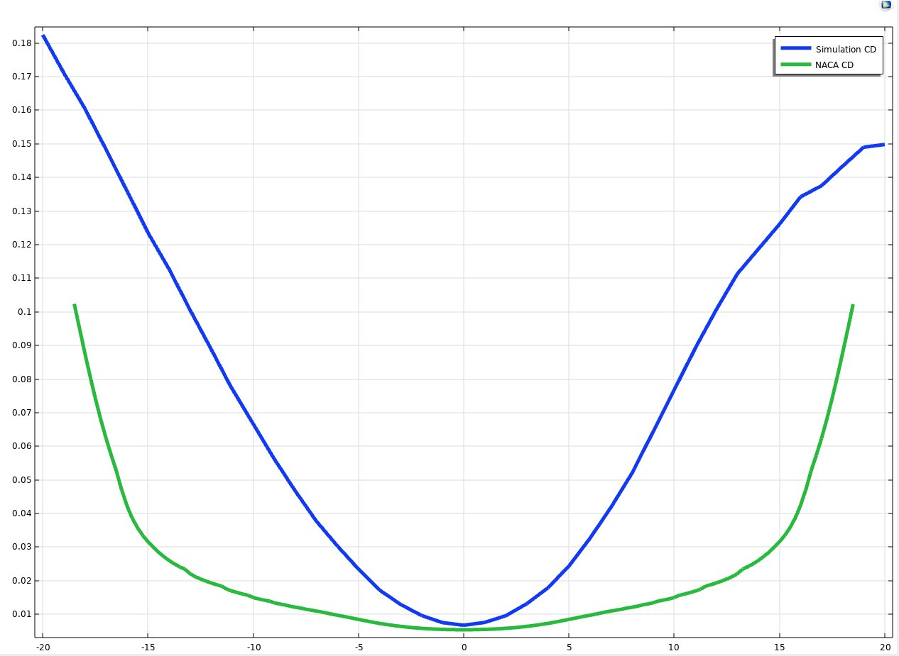
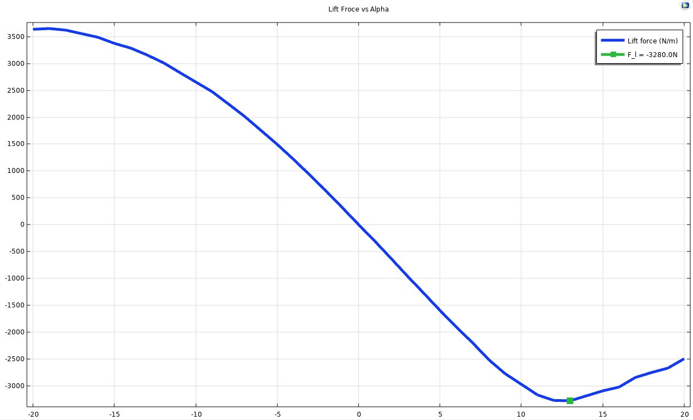
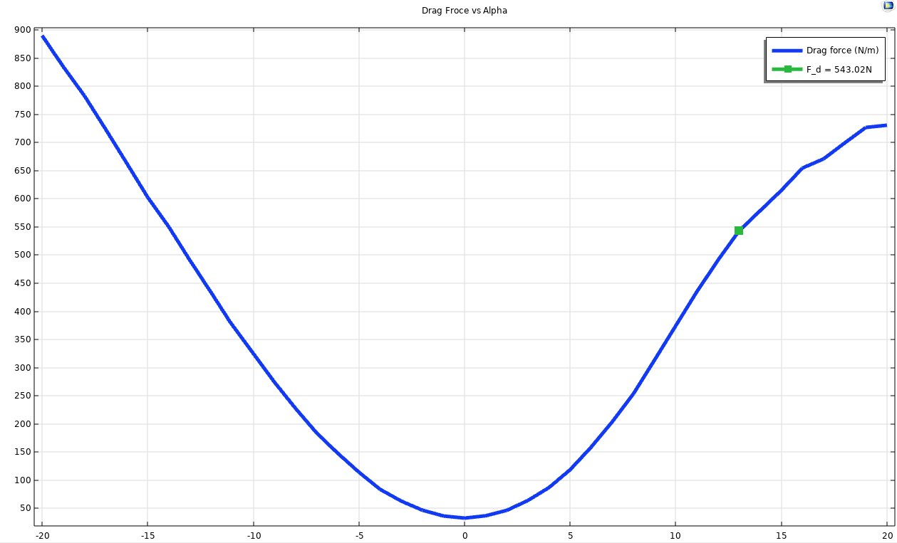
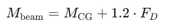
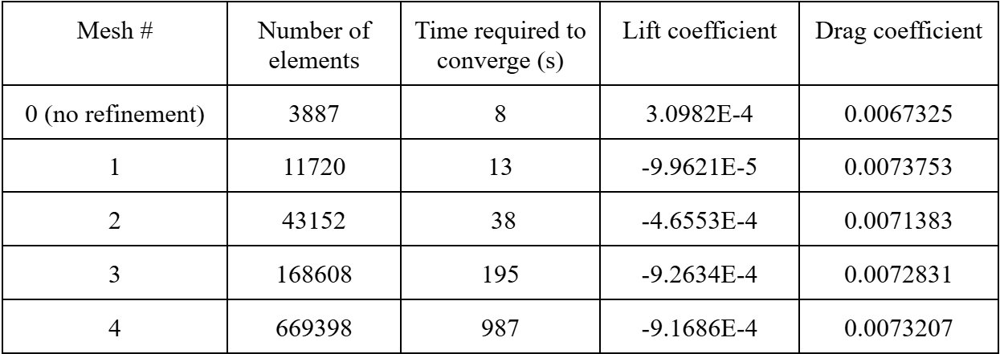
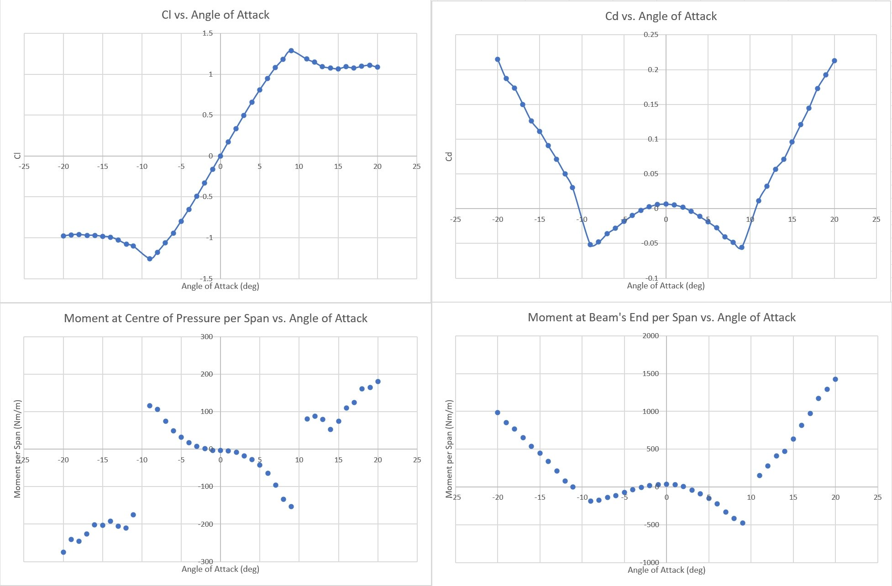
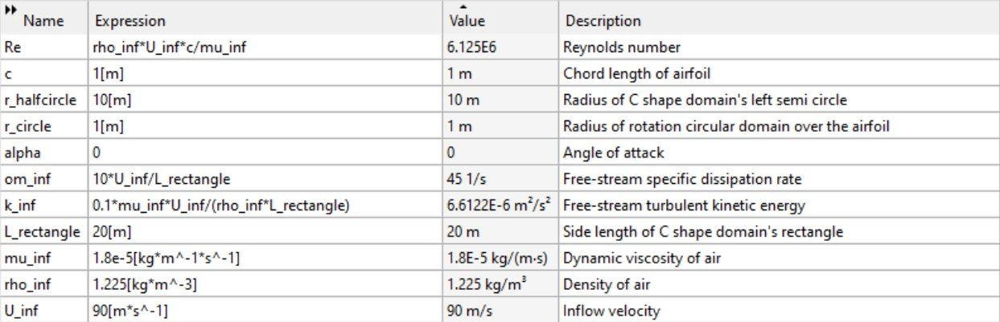
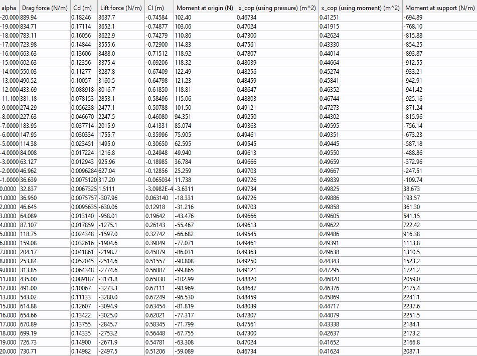

On May 4, 1969, Graham Hill's Lotus 49B suffered a catastrophic rear wing collapse during the Spanish Grand Prix at Montjuic Park — the supporting strut failed under extreme aerodynamic load, sending Hill into the barriers. Similar failures occurred across multiple teams that season, prompting an immediate ban on high-mounted wings before the Monaco Grand Prix two weeks later.
This study reconstructs the loading conditions that caused these failures using 2D CFD in COMSOL Multiphysics. A NACA 0012 airfoil profile (the most likely candidate for the Lotus 49B, whose exact profile was never published) was modeled in a C-shaped domain with a k-ω SST turbulence model, swept across angles of attack from −20° to +20° at race-representative conditions (90 m/s, Re = 6.125×10&sup6;). The resulting forces were applied to a simplified single-strut FBD using known 2024 aluminum strut dimensions.
Validation against published NACA 0012 data confirmed stall at 16° and linear-region agreement, establishing confidence in the structural loading calculations.
k-ω SSTThe most significant result of this study was the identification of a sharp, nonlinear moment transition between α=9° and α=10° under near-ground conditions. In the ground-effect configuration at 90 m/s, the moment at the strut base increases dramatically over this one-degree range — far exceeding the smooth behavior predicted by classical NACA wind tunnel data.
It is likely that the Lotus 49B was designed to operate near α=9°, the point of maximum downforce (C_L peak). However, any small operational deviation — a track bump, a steering input cresting a rise, or an asymmetric load — could shift the wing past that threshold, inducing a large, sudden torque spike that the slender 2024 aluminum struts were never designed to withstand.
The ground-effect C_L curve is also non-symmetric around zero, with early stall-like behavior and elevated drag compared to freestream NACA results. This is attributed to boundary layer growth along the ground wall, increased pressure build-up, and early flow separation — effects entirely absent from the wind tunnel data the designers would have used in 1969.
At Re = 1,000,000 (15 m/s inflow), the simulation matched the NACA 0012 database closely in the −5° to +5° range, with nearly identical slopes. The predicted stall angle of 16° matches the published experimental value exactly. Maximum C_L was slightly lower than the reference (1.25 vs. 1.4), attributed to the limitations of steady-state RANS modeling at high angles of attack.
Drag coefficients were systematically overestimated (C_D ≈ 0.04 at 0° vs. published 0.007), consistent with known RANS skin friction over-prediction. However, the relative trends across angles of attack remain valid for structural loading comparisons, and the lift forces — the primary driver of strut bending — were accurately captured.








